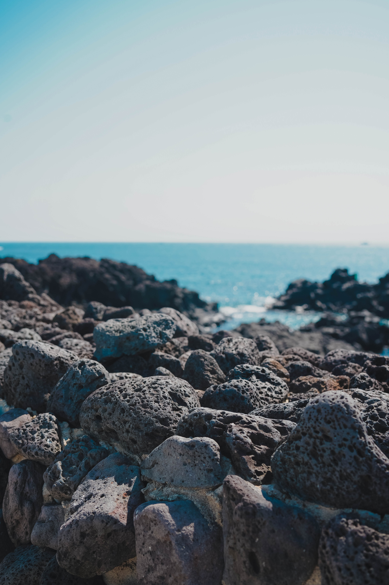
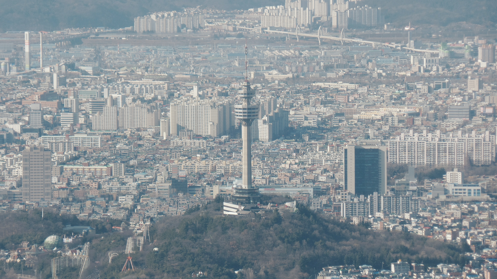
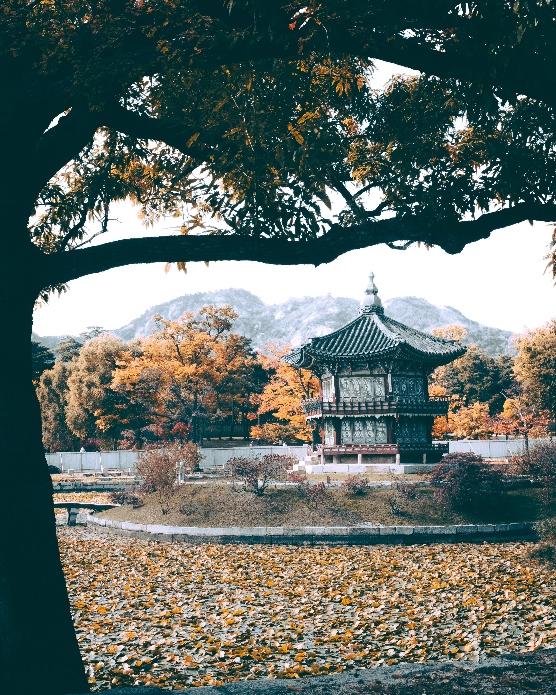
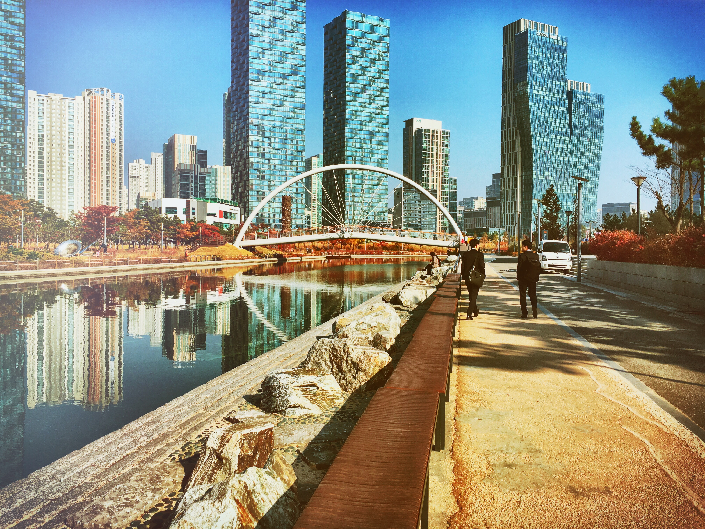
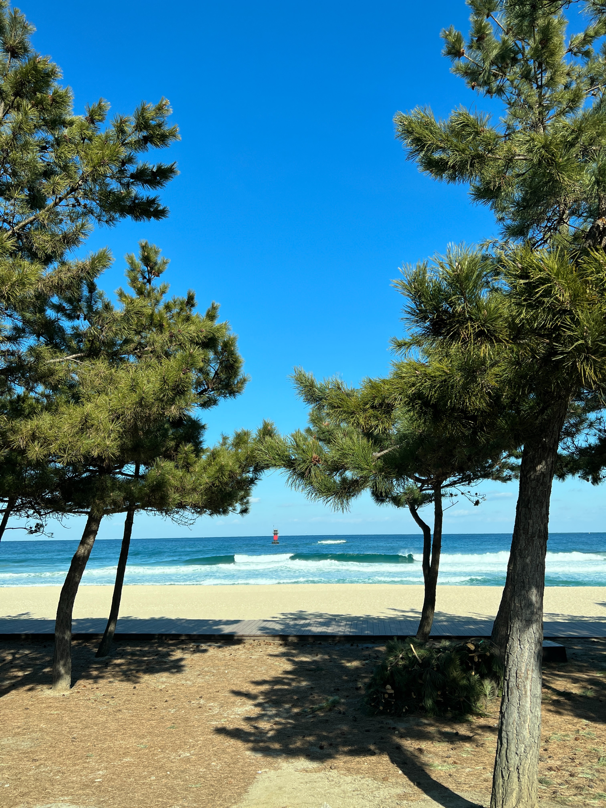
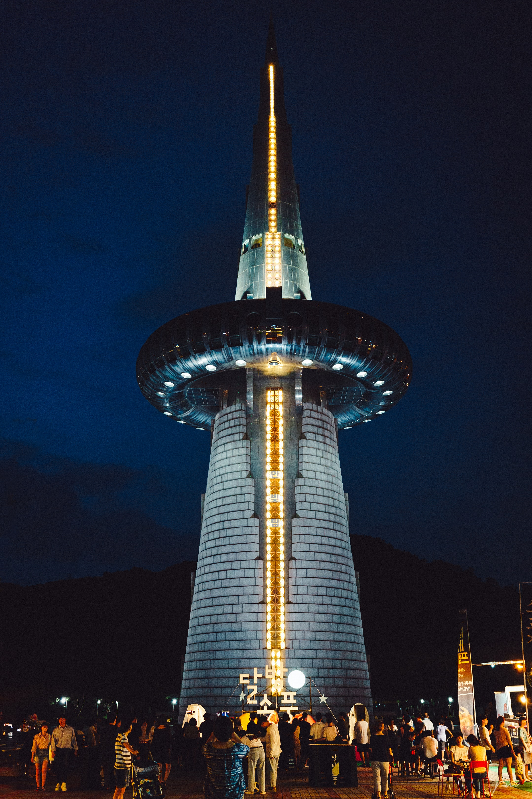

Staycation Places worth visiting in South Korea

Seoul
Seoul is one Home to sleek skyscrapers and shopping malls, as well as well-preserved royal palaces and Buddhist temples, the South Korean capital is teeming with unique culture and modern comforts

Jeju Island
Jeju Island is the youngest volcanic island in Korea and various volcanic landforms are well preserved such as lava tube caves, small volcanic edifices, volcanic shield, etc. It provides various magnificent landscapes from alpine plants of Mount Hallasan to colorful soft temperate corals under the sea.

Busan
Busan is one of Asia's great unheralded cities. It's a city full of surprises and a laid-back vibe that makes it the ideal base from which to explore further afield in South Korea, with cobalt oceans, verdant mountains, and delectable fare.

Daegu
Daegu is one of the largest cities in South Korea, and coupled with its rich and ancient culture, it has a number of scenic attractions and beautiful mountains. Enjoy scenic views of the Palgongsan and the Apsan mountains, as well as historical sites dating back to the Silla periods and the Joseon Dynasty. The city’s beautiful parks offer exquisite scenery, especially during fall and spring

Gyeongju-si
Gyeongju is a popular tourist destination for both locals and foreign visitors, and it makes for an excellent day trip from Busan. You'll find 1,000 years of Silla heritage as well as fine examples of Buddhist art in such a small area.

Incheon
Incheon is a port city, it is definitely not a boring one, as there are various interesting spots that are worth seeing, such as the beautiful Incheon Grand Park, the peaceful Eurwagni Beach, and the amazing Wolmido Island. The Culture Trip takes you to the best attractions and activities in Incheon.

Gangneung-si
Gangneung is a coastal city with the scent of pine and coffee permeating throughout. The dazzling East Sea and lush pine forests are Gangneung’s gifts of nature. It has a diverse cultural heritage and has recently become known as a city of coffee, adored by seasoned travellers.
Gangneung is a city that delights travellers with fresh seafood and exceptional local cuisine

Daejeon
Daejeon is home to 23 universities and colleges, including KAIST and Chungnam National University. Daejeon has earned its name as "Asia's Silicon Valley" and "high technology city". The city hosted the Taejon Expo '93 and the International Mathematical Olympiads in 2000.